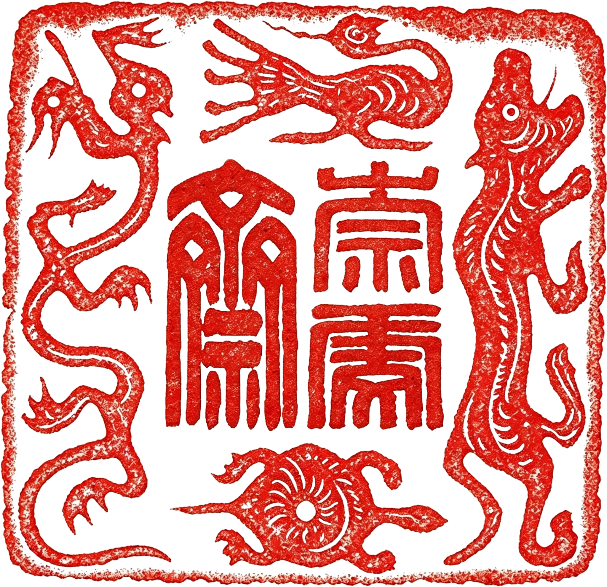
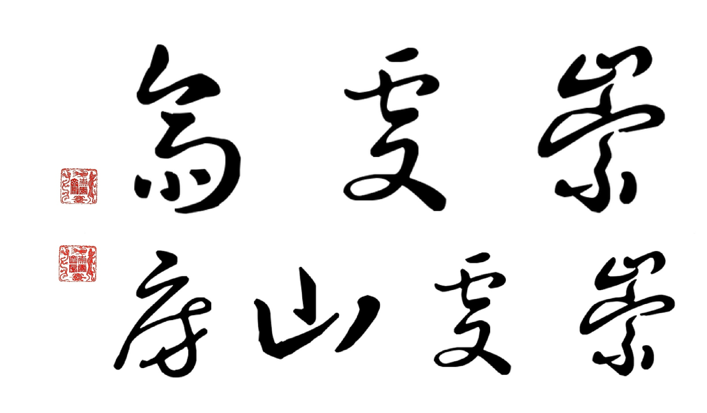

崇虔山房崇虔斋 简介
确立生命姿态的庄重仪式，浮沉尘世中的心灵栖所。
一、 基本概况

崇虔斋（又称崇虔山房），于丙午年癸巳月己丑日（2026年5月15日）正式立斋。这并非单纯的物理起居建舍，而是一场确立生命姿态的庄重仪式，旨在为浮沉尘世中的现代人提供一处内敛修身、亲近自然的心灵栖所。
二、 立斋之魂
崇虔斋的核心精神，尽归于十六字真言：
心有所崇，行有所虔
崇山可仰，虔心自安
崇山可仰，虔心自安
【十六字真言详细释义】
此十六字，实为立身处世之枢机，内外相契，指引修行：
心有所崇
“崇”乃景仰。内心需存有敬畏之标尺与仰望之高山，方能于浮沉尘世中寻得人生正确的方向。
行有所虔
“虔”乃诚敬。行事需持有笃定之戒律，保持虔诚与敬畏，以此作为一言一行的修行准则。
崇山可仰
这是修行的外在提醒。居于斋中，抬头见匾，便能感受到如仰望高山般的庄严，在纷扰中觅得真正的宁静。
虔心自安
这是修行的最终境界。通过内心的敬畏与行为的虔诚，最终得享“无上清凉”，无论身处何地，皆能万般安宁。
三、 名号释义
“崇”
乃景仰、敬畏之意。心存敬畏之标尺，便能如仰望高山般寻得人生的方向。
“虔”
乃诚敬之意。行持笃定之戒律，内外相契，于浮沉中觅得真正的宁静。
“斋”
戒也，主内敛修身。
“山房”
隐也，主亲近自然。
四、 立斋理念与宗旨
- 顺应天时：择“火德鼎盛”之丙午年，“水火既济”之癸巳月，“厚土承托”之己丑日而立，取气机交泰、稳重而清澈之吉意。
- 处世枢机：将“崇”与“虔”作为立身处世的根本。抬头见匾，便是“崇山可仰”的提醒；低眉行事，皆是“行有所虔”的修行。
- 养心之境：立斋于此，非为遁世，而为养心。愿居于此处或偶至的客，皆能守住准则，得享“无上清凉”。无论身处山野还是闹市，皆能“崇山常在眼前，虔心常在胸中，万般皆得安宁”。
五、 结语
正如斋主所记：“内外相契，便能如仰望高山般寻得方向。”
崇虔斋是一处清净道场，更是一种生活哲学——以敬畏之心立身，以虔诚之心行事。
崇虔斋是一处清净道场，更是一种生活哲学——以敬畏之心立身，以虔诚之心行事。